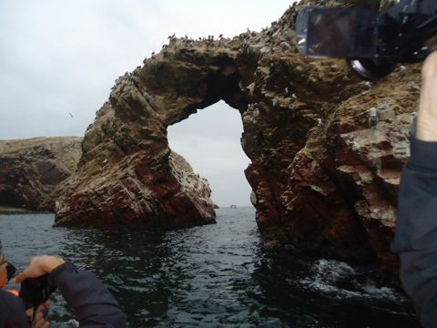
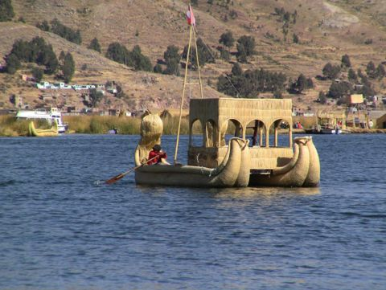
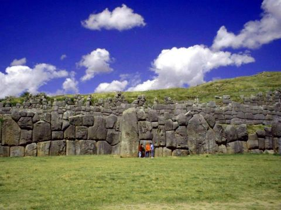

Южная Америка: камни, пустыни и соль
Фотографии из поездок Travel South по Перу и Боливии. Выберите место, чтобы увидеть лучшие снимки, историю и видео.
 Линии Наски13 фото
Линии Наски13 фото Некрополи и акведуки Наски: Чаучилья, Кауачи, Канталлок10 фото
Некрополи и акведуки Наски: Чаучилья, Кауачи, Канталлок10 фото
Паракас и Уакачина15 фото Сильюстани14 фото
Сильюстани14 фото
Пуно и озеро Титикака10 фото Чукуито: Инка-Уйо10 фото
Чукуито: Инка-Уйо10 фото Араму-Муру (Хайю-Марка)11 фото
Араму-Муру (Хайю-Марка)11 фото Куско15 фото
Куско15 фото
Саксайуаман19 фото Мачу-Пикчу20 фото
Мачу-Пикчу20 фото Ольянтайтамбо16 фото
Ольянтайтамбо16 фото Писак и Священная долина14 фото
Писак и Священная долина14 фото Тиуанако и Пума-Пунку20 фото
Тиуанако и Пума-Пунку20 фото Эль-Фуэрте-де-Самайпата17 фото
Эль-Фуэрте-де-Самайпата17 фото Солончак Уюни17 фото
Солончак Уюни17 фото